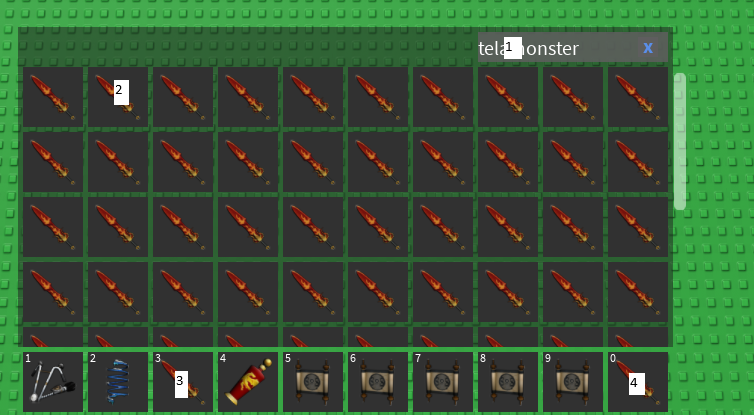

I dont feel like waiting for the cooldown after finishing my combos from gear combo example
so what I can do is use a macro that goes to my inventory and replaces the 2 telamonsters with new ones
now what do I need for this?
first of all I need the key for inventory
its not the same for all keyboard layouts so lets store it in a custom variables
for me the inventory button is "§"
I also need the coordinates for these 4 points:

now lets simplify it a bit
I notice that for 3 and 4 I can use the same y value
now lets get everything we need and assign them to custom variables
CTRL ALT M to get the x and y axis value of each point
it turns out like this for me:
V‡SX‡=‡W‡*189/320 V‡SY‡=‡H‡*221/360
V‡NX‡=‡W‡*73/192 V‡NY‡=‡H‡*703/1080
V‡TX1‡=‡W‡*53/128 V‡TX2‡=‡W‡*417/640 V‡TY‡=‡H‡*11/12
‡SX‡ and ‡SY‡ are the x and y value for point 1 (S for search)
‡NX‡ and ‡NY‡ are the x and y value for point 2 (N for new)
‡TX1‡ is the x value for point 3 (T is for toolbar)
‡TX2‡ is the x value for point 4
‡TY‡ is the y value for point 3 and 4 (they can share the same y value)
now how can I use all this to replace the telamonsters?
it is obvious that I first need to search telamonster so lets do that using MC and T
V‡SX‡=‡W‡*189/320 V‡SY‡=‡H‡*221/360
V‡NX‡=‡W‡*73/192 V‡NY‡=‡H‡*703/1080
V‡TX1‡=‡W‡*53/128 V‡TX2‡=‡W‡*417/640 V‡TY‡=‡H‡*11/12
K‡inv‡ WF50
MC(‡SX‡,‡SY‡) T(telamonster) {ENTER}
K is key input, WF is wait flag, MC is move mouse and click, T is text input, {ENTER} is special key
ok after this lets first take out the old telamonsters by dragging them to the middle of the screen
we can do that using MD
V‡SX‡=‡W‡*189/320 V‡SY‡=‡H‡*221/360
V‡NX‡=‡W‡*73/192 V‡NY‡=‡H‡*703/1080
V‡TX1‡=‡W‡*53/128 V‡TX2‡=‡W‡*417/640 V‡TY‡=‡H‡*11/12
K‡inv‡ WF50
MC(‡SX‡,‡SY‡) T(telamonster) {ENTER}
MD(‡TX1‡,‡TY‡,‡W‡/2,‡H‡/2) MD(‡TX2‡,‡TY‡,‡W‡/2,‡H‡/2)
MD is mouse drag
this script will drag the first and second telamonster to (‡W‡/2,‡H‡/2) which is the middle of the screen
ok now what do we do after this?
we use point 2 shown in the earlier image to drag out the new telamonsters
it can be done like this:
V‡SX‡=‡W‡*189/320 V‡SY‡=‡H‡*221/360
V‡NX‡=‡W‡*73/192 V‡NY‡=‡H‡*703/1080
V‡TX1‡=‡W‡*53/128 V‡TX2‡=‡W‡*417/640 V‡TY‡=‡H‡*11/12
K‡inv‡ WF50
MC(‡SX‡,‡SY‡) T(telamonster) {ENTER}
MD(‡TX1‡,‡TY‡,‡W‡/2,‡H‡/2) MD(‡TX2‡,‡TY‡,‡W‡/2,‡H‡/2)
MD(‡NX‡,‡NY‡,‡TX1‡,‡TY‡) MD(‡NX‡,‡NY‡,‡TX2‡,‡TY‡)
K‡inv‡
now this will drag out new telamonster to the points 3 and 4
K‡inv‡ is put at the end to close inventory
this script will now take out old telamonster and replace them with new ones!
however if you do more than this then you should do it using this method